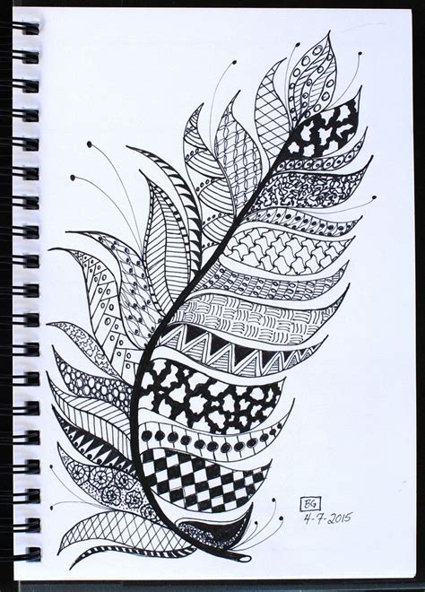
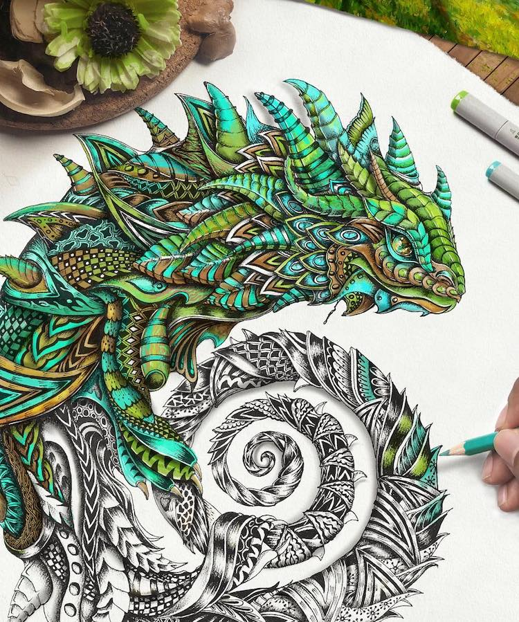
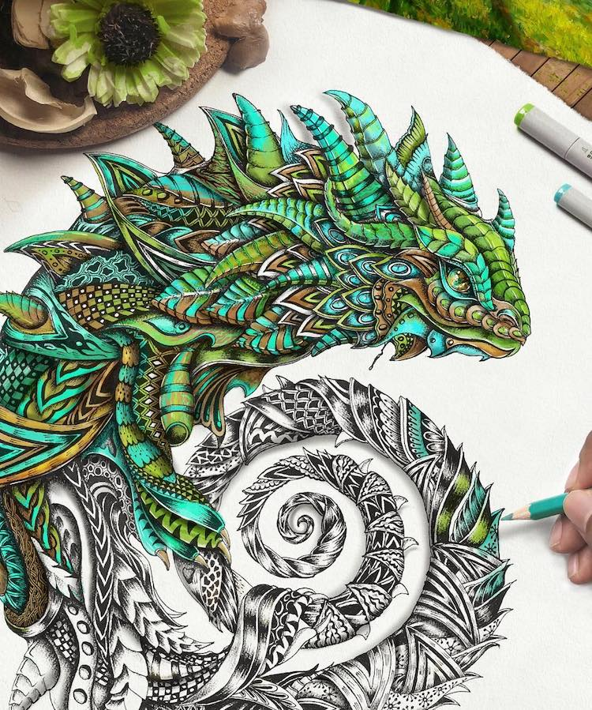
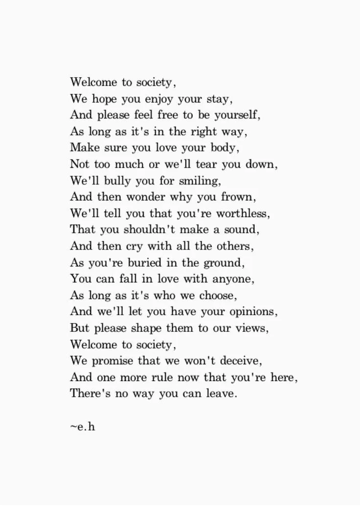
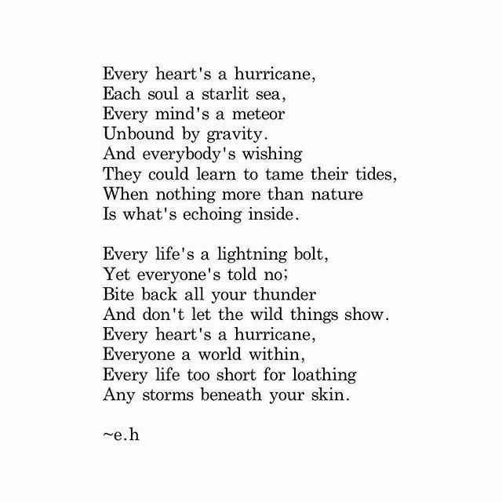
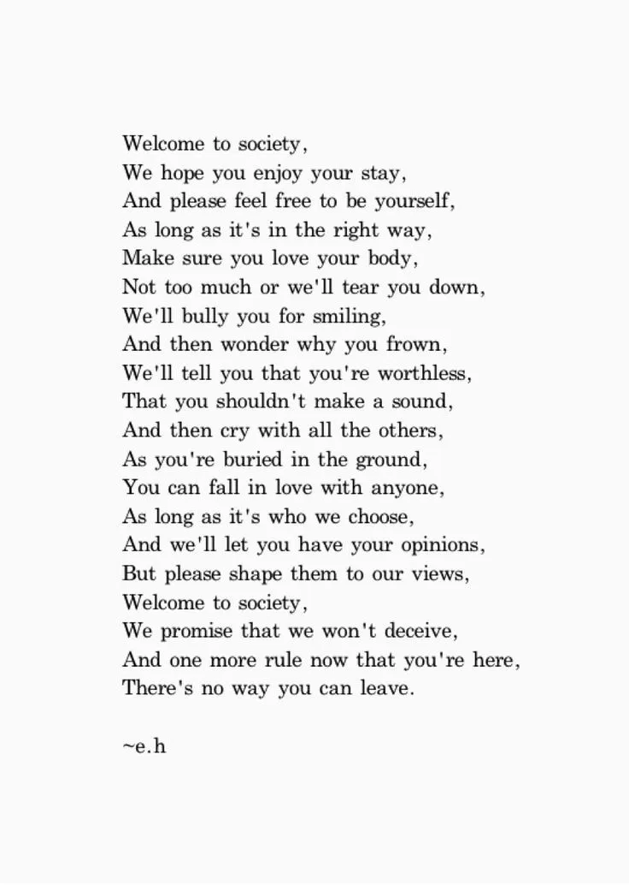
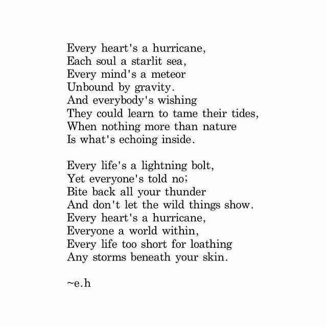

Hi! Welcome to My Hobbies Page, here I have some pictures of some hobbies I have and what I like to do when I'm bored.
Click here to go back to the main homepage
I love anything that has to do with colouring or painting because it is very relaxing and calming. Whenver I'm stressed, painting helps me feel more relaxed because you are expressing yourself in all sorts of pictures and colours.
I specifically love to draw zentangles. I love to draw zentangles because it's something where you draw many designs of your choice freely. The designs can range from being very complex or even very simple. Also you can draw these designs within a bigger picture such as the feather below.

.jpg.jpg) 

Although I love drawing, I also like to read, specifically poetry and storybooks. I love al sorts of poetry because it's away you can rewind a little and read about something you are really interested in.
I like to read poems by Erin Hanson. She is an Austrailian poet who is 18 years old. I like to read some of her poems because they are very general, easy to understadn, short but have lots of meaning to them.
Reading poetry also helps you understand and think deeper about what the actual menaing really is. The great thing about this is that from one piece of text you could have your own opinion on what it means to you. Some poems I like specifically are: "Welcome to Society", "Every Heart's A Hurricane", and "This". They all talk about reality and how we changed throughout the years. If you would like to read them, you can find them below.
  
 